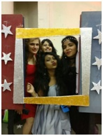
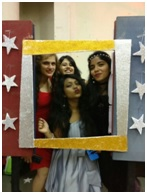

Getting into the MKSS Cummins College of Engineering for Women, we were told how lucky we were to be a part of an Autonomous institution with such a good reputation. At that time however, all I could concentrate on was "for Women". Which to us meant no boys, all study and no fun. Boy, were we wrong about that! Freshers' week, organised by the SEs, turned out to be a delightful surprise. A theme was given for each day of the week, and they were very original and hip. Studies took a backseat as we got to experience the first of college life.

6th Sep: Back to School: We somehow relived our school days while saying goodbye to our uniforms in style. Even the teachers were amused when we showed up to the lectures wearing two ponies and white socks!


9th Sep: Formal: Everyone sobered up and dressed to impress. The pantsuits and dresses would have made any recruiter proud!

Then our seniors gave us a preview of what's to come with a FLASHMOB in the Quadrangle, which made us dizzy with excitement at the prospect of Freshers' Eve.

7th Sep: Mis-match: Think two different earrings, two different shoes, and outfits we would not have been caught dead in! But the unity shown by everyone made us carry these wacky styles with confidence.


8th Sep: Twin: This bang on trend theme was perhaps the most followed. #twinning trended on every social networking site as we showed off our how cool our college celebrations are, much to other's envy.

The theme was Disco, and everyone looked like divas in their sparkly dresses. It was very well executed with beautiful decorations and unforgettable performances. The Miss Fresher competition was very entertaining and all the contestants performed very well. Malavika Menon of Computer Science won the coveted title.

 

Cummins welcomed us in the best possible way and in this process we fell in love our home for the next 4 years. Not only that, but the week was a great bonding experience as we forged friendships for life. Cummins, after all, turned out to be just as described by the alumni: One amazing ride!